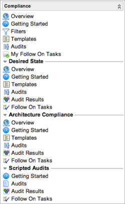

Compliance
Contents
1 Overview
Compliance is a tool set that enables administrators to certify ServiceNow data for correctness and fix any discrepancies found in the data. Compliance offers these certification options to suit your organization's size and requirements:
- Desired State: Automatically compares the actual attributes and relationships of specific ServiceNow records against the desired states for those records. For example, an audit can detect a Linux database server with insufficient RAM or whose Depends on relationships with another CI is incorrect. The system then publishes any discrepancies found and automatically assigns follow-on tasks to qualified users to bring that server into compliance.
- Architecture Compliance: Automatically compares the actual attributes of specific CIs, such as CPU count, RAM, or disk size against the expected attributes for those CIs. The system publishes any discrepancies found and automatically assigns remediation tasks to qualified users.
Compliance is available starting with the Dublin release.
2 Compliance Templates and Audits
The Templates and Audits modules on the top level of the Compliance menu enable a certification_admin user to create, edit, and delete all template and audit types. You can use compliance templates and audits to evaluate records for any table in ServiceNow, not just those extending the Configuration Item [cmdb_ci] table. Compliance audits certify record attributes only. Compliance templates can be used in control test definitions in Governance, Risk, and Compliance.
3 Architecture Compliance
Architecture compliance performs scheduled or on-demand audits of configuration management database (CMDB) data to determine which configuration items (CI) match the expected attributes. The compliance process checks servers to ensure that their resources, such as CPU speed or memory, comply with standards set by your organization. Audit reports show any discrepancies in the attributes of the target CIs, and ServiceNow automatically assigns follow-on tasks to qualified users who can remediate those discrepancies.
4 Desired State
Desired state performs scheduled or on-demand audits of CMDB data to determine which records match the expected attributes, CI relationships, and relationships to other records in the system. For example, desired state can determine if a computer has a license for a particular software program. The compliance process checks configuration items (CI) to ensure that their attributes and relationships comply with standards set by your organization. Audit results show any discrepancies in a record's desired state, and ServiceNow automatically assigns follow-on tasks to qualified users who can remediate those discrepancies.
5 Menus and Modules
Users with the certification_admin or admin role can access the Compliance menu. Users with the certification role can access their follow-on tasks only.
|  |
Desired State
Architecture Compliance
Scripted Audits
|
{kind=link}
6 Activating Compliance
Compliance functionality is provided by the Certification Core plugin which is used by the following applications. Certification Core cannot be activated by itself, but is activated automatically when either of the first two applications is activated:
7 Enhancements
7.1 Eureka
- You can add an attribute to the ServiceNow system dictionary that defines the desired state for a specific field for individual classes of CIs, such as Linux or Windows servers. Additional condition operators in certification templates enable you to compare actual values with desired state values in audits. Desired states for specific fields is available for all compliance types except scripted audits.
- You can define threshold and stability for audit results on a desired state field. This allows you to audit the audit results and determine the stability of a CI based on how often it falls out of compliance in a specified health window.
- Two additional reports track exceeded thresholds and unstable CIs resulting from desired state audits.